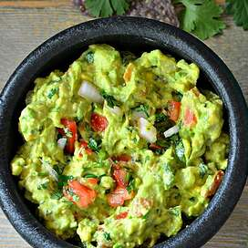

Guacamole

Puede hacer que esta ensalada de aguacate sea suave o gruesa según sus gustos.
Igredientes
- 3 aguacates - pelados, deshuesados y triturados
- 1 lima, en jugo
- 1 cucharadita de sal
- ½ taza de cebolla picada
- 3 cucharadas de cilantro fresco picado
- 2 tomates roma (ciruela), cortados en cubitos
- 1 cucharadita de ajo picado
- 1 pizca de pimienta de cayena molida (Opcional)
Pasos
- En un tazón mediano, triture los aguacates, el jugo de lima y la sal. Mezcle la cebolla, el cilantro, los tomates y el ajo. Agregue la pimienta de cayena. Refrigere 1 hora para obtener el mejor sabor, o sirva de inmediato.